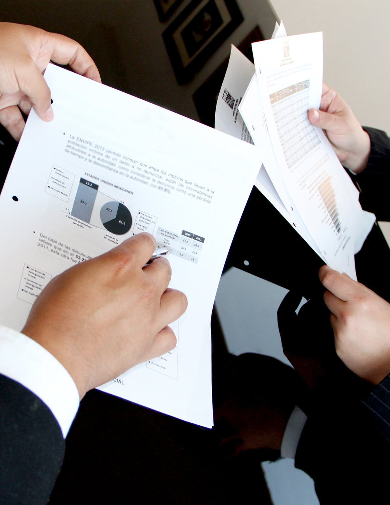

Yrittäjyys
Espoosta yrittäjämyönteinen kunta
Kuntavaalit 2021 tulevat olemaan yksi mielenkiintoisimmista vaaleista pandemian aikana.
Moni yrittäjä toivoo, että kunta-asiat saisi kitkattomasti hoidetuksi verkossa ajasta ja paikasta riippumatta.
Yrittäjän tilanteeseen liittyvien palvelujen tulisi löytyä vaivattomasti yhden verkkokanavan kautta tuoden yksinkertaisuutta ja helppoutta arkeen.
Yrittäjän työ helpottuisi, jos kunnalle ja muille julkisille toimijoille luovutetut tiedot liikkuisivat tietojärjestelmien välillä yhä tehokkaammin.

Mielenterveys
Tukea kestävästi, ilman huolta
Mielenterveysongelmien puhkeamisen ja pahenemisen riski on lisääntynyt huomattavasti koronan aiheuttamien poikkeusolojen myötä.
Toimeentulo on vaakalaudalla, päihteidenkäyttö ja itsemurhat ovat lisääntyneet ja avun saamisessa on usein viivettä.
YK on varoittanut maailmaa uhkaavasta koronan jälkeisestä mielenterveyskriisistä ja kannustaa valtioita panostamaan psykososiaaliseen tukeen.
Kehitysvammaisten työllistyminen
Mahdollisuus työllistymiseen on annettava kaikille
Suomessa on noin 30 000 työikäistä kehitysvammaista.
Vain noin 500-600 heistä tekee palkkatyötä.
Arviolta 3000 ihmistä voisi tehdä palkallista työtä, jos heille annettaisiin siihen mahdollisuus.
Kunnallisten elinkeinopalveluiden, kehitysyhtiöiden ja oppilaitosten tulisi edistää digitaalisten ratkaisujen ja liiketoimintamallien käyttöönottoa pienissä ja keskisuurissa yrityksissä.
Digialan yritykset voivat tarjota palveluverkoston tarvitsemaa asiantuntijuutta ja yhdistää kunnan kanssa eri ideoita.
esimerkiksi tarvemäärittelyyn tarvittaisiin lisää apua pääkaupunkiseudun yrittäjille jotta päädyttäisiin oikeaan digiratkaisu valintaan.
Tämä edistäisi yritysten kehitystä valtavasti.
Parantamalla mielenterveyspalveluihin pääsyä voitaisiin vähentää merkittävästi mielenterveysongelmista johtuvia sairauspoissaoloja ja työkyvyttömyyttä.
Terapiatakuun myötä apu olisi saatavilla yhdenvertaisemmin ja nopeammin jokaiselle.
Perheitä ja vanhempia voidaan tukea parhaiten, kun perhettä hoidetaan kokonaisuutena.
Espoon tulee panostaa ennaltaehkäisevään mielenterveystyöhön muun muassa perhetyön kautta, jolloin sosiaalialan ammattilaiset kohtaavat perheen heidän omassa ympäristössään.
Suomessa on tuhansia kehitysvammaisia ihmisiä, joilla on koulutus sekä halua työskennellä. (Info : Kehitysvammaliitto)
Saadaksemme Espooseen enemmän työpaikkoja aikuisille, joilla on erityistarpeita, meidän tulee kehittää heidän työllistymistään yhteistyössä niin heidän itsensä, kuin heidät potentiaalisesti palkkavien toimijoiden kuten yritysten kanssa.
Kehitysvammaliitto tukee kehitysvammaisten työllistymistä monin tavoin, muun muassa kehittämällä palveluja, vaikuttamalla päätöksentekoon, auttaa lainsäädäntöön liittyvissä asioissa ja kouluttamalla alan työntekijöitä ja esimiehiä.
Tätä voisi kehittää yhdessä kunnan kanssa entisestään, jotta mahdollisuudet olisivat kaikille samanvertaiset.